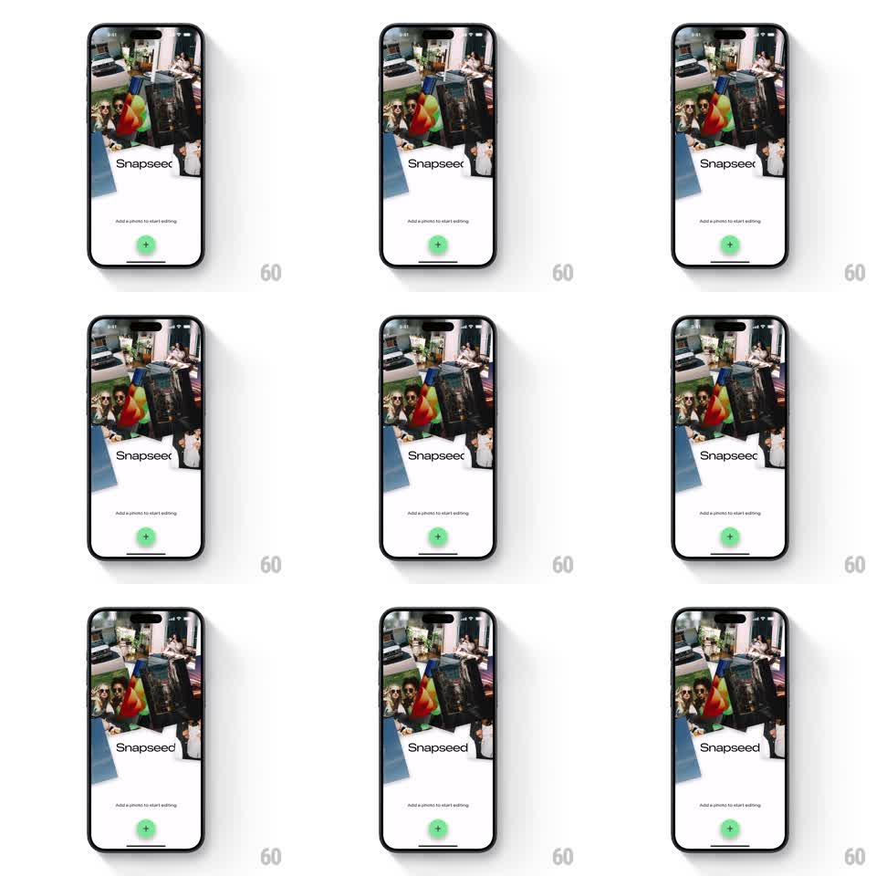

Media
Frame-by-frame

Rebuild this interaction 1:1: Snapseed's intro collage - a layered cluster of tilted photos above the wordmark that subtly tilts and shifts with device gyroscope parallax.

Rebuild this interaction 1:1: Snapseed's intro collage - a layered cluster of tilted photos above the wordmark that subtly tilts and shifts with device gyroscope parallax. ## Integration Integration: stack-agnostic spec - springs given as stiffness/damping, timed motions as duration + curve; map every value to your framework and animation library of choice. ## Scene White empty-state screen: a loose collage of overlapping photo prints (tilted at various angles, soft shadows) filling the top half, the "Snapseed" wordmark center, "Add a photo to start editing" below it, and a green circular + button. ## Motion spec Pattern: gyroscope parallax over a layered photo collage. - The collage lives in 3 depth layers: background prints translate +-6pt, mid prints +-12pt, the front print +-18pt, all against device tilt (smoothed 120ms, spring ~200/24 on release back to neutral). - Each layer also counter-rotates slightly (+-1.5deg max, depth-scaled) so the cluster feels suspended, not flat. - Idle without motion input: a slow ambient drift (translateX +-4pt, 6s sine) keeps the collage alive. - Wordmark, caption, and + button are fixed - they never join the parallax. ## Calibration - Parallax is seasoning: max offsets are small (18pt front layer) and motion is heavily smoothed. - Prints keep their tilt angles and shadows at all times - only their positions drift. ## Reduced motion Static collage; no gyro response. ## Don't miss - The collage reads as physical prints: soft drop shadows that shift direction with the parallax. - White screen, black wordmark, green button - the classic Snapseed empty state stays untouched below the collage.